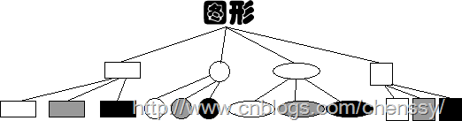
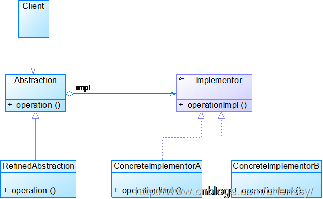

Cuando empecé a aprender Java, el profesor solía usar un ejemplo para explicar la herencia: dibujar. Aquí hay un pincel que puede dibujar cuadrados, rectángulos y círculos (todos saben cómo hacerlo, así que no lo explicaré). Pero ahora necesitamos colorear estas formas, y hay tres colores: blanco, gris y negro. Aquí podemos dibujar 3*3=9 figuras: cuadrado blanco, rectángulo blanco, círculo blanco... Llegados a este punto, casi todos sabemos que existen dos soluciones:
- Solución 1: Proporcionar versiones de cada color para cada forma.
- Solución 2: Combinar colores y formas según sea necesario.
Si adoptamos la solución 1, ¿podemos entenderlo también así? ¿Proporcionar versiones de cada forma para cada color? Esto es totalmente posible. Como sigue:

Para estas dos figuras, todos tenemos claro este problema: si añadimos una elipse, ¿no tendríamos que añadir tres colores más? Si añadimos un verde, tendríamos que añadir sus cuatro formas, y así sucesivamente. Cada adición aumentará varias clases (si se añade un color, se aumentan tantas clases como formas haya; si se añade una forma, se aumentan tantas clases como colores haya). Supongo que ningún programador querría esta situación. Entonces veamos la solución 2. La solución 2 ofrece el siguiente método: proporcionar dos clases padre, una para color y otra para forma; ambas clases padre contienen sus correspondientes subclases, y luego se combinan colores y formas según sea necesario.

Cuando hay varias dimensiones de cambio, generalmente adoptamos la solución 2 para implementarlo; además de reducir el número de clases en el sistema, también facilita la expansión del sistema. A la aplicación de la solución 2 la llamamos patrón Puente.

1. Definición del patrón
El patrón Puente separa la parte abstracta de su parte de implementación, de modo que ambas puedan cambiar de forma independiente.
El patrón Puente convierte la relación de herencia en una relación de asociación; reduce el acoplamiento entre clases, disminuye el número de clases en el sistema y también reduce la cantidad de código.
La frase "separar la parte abstracta de su parte de implementación" no es fácil de entender. En realidad, no se trata de separar la clase abstracta de sus clases derivadas, sino de que la clase abstracta y sus clases derivadas se utilicen para implementar sus propios objetos. Si aún así no se entiende, primero debemos aclarar qué es la abstracción, qué es la realización y qué es el desacoplamiento.
Abstracción:Su concepto es la acción o proceso de extraer una o varias características de un objeto complejo y prestar atención solo a otras características. En la orientación a objetos, es el proceso de extraer las propiedades comunes de los objetos para formar una clase.
Realización:Es la implementación concreta dada para la abstracción. Es un proceso inverso a la abstracción; la realización es una mayor concreción de la cosa abstracta.
Desacoplamiento:El desacoplamiento es liberar el acoplamiento entre la abstracción y la realización, es decir, cambiar la fuerte relación entre ellas por una relación débil, y convertir la relación de herencia entre los dos roles en una relación de asociación.
En cuanto a esa frase: "separar la parte abstracta de su parte de implementación", aplicando lo que dice el libro "Big Talk Design Patterns", significa que el sistema puede tener múltiples ángulos de clasificación, y cada ángulo puede cambiar; entonces hay que separar estas clasificaciones multiangulares para que cambien de forma independiente, reduciendo el acoplamiento entre ellas.
El llamado desacoplamiento en el patrón Puente se refiere a usar una relación de asociación (composición o agregación) entre la abstracción y la realización de un sistema de software, en lugar de una relación de herencia, de modo que ambos puedan cambiar de forma relativamente independiente. Este es el propósito del patrón Puente.
2. Estructura del patrón
La siguiente figura es el diagrama de estructura UML del patrón Puente:

El patrón Puente incluye principalmente los siguientes roles:
- Abstraction: Clase abstracta.
- RefinedAbstraction: Clase abstracta refinada.
- Implementor: Interfaz de la clase de implementación.
- ConcreteImplementor: Clase de implementación concreta.
3. Implementación del patrón
Para el escenario del patrón, usaremos el del dibujo. Su diagrama UML de estructura es el siguiente:
 Primero está la clase Shape: es una clase abstracta que principalmente proporciona el método para dibujar formas. Shape.java:
Primero está la clase Shape: es una clase abstracta que principalmente proporciona el método para dibujar formas. Shape.java:
Ejemplo
Luego están las tres formas.
Círculo Circle.java:
Ejemplo
Rectángulo Rectangle.java:
Ejemplo
Cuadrado Square.java:
Ejemplo
Interfaz de color Color.java:
Ejemplo
Blanco White.java:
Ejemplo
Gris Gray.java:
Ejemplo
Negro Black.java:
Ejemplo
Cliente Client.java:
Ejemplo
Resultado de la ejecución:
Cuadrado blanco
4. Ventajas y desventajas del patrón
Ventajas
- 1. Separa la interfaz abstracta y su parte de implementación. Proporciona una mejor solución que la herencia.
- 2. El patrón Puente mejora la escalabilidad del sistema; al expandir cualquiera de las dos dimensiones de cambio, no es necesario modificar el sistema original.
- 3. Los detalles de implementación son transparentes para el cliente; se pueden ocultar los detalles de implementación al usuario.
Desventajas
- 1. La introducción del patrón Puente aumenta la dificultad de comprensión y diseño del sistema; debido a que la relación de agregación se establece en la capa de abstracción, se requiere que los desarrolladores diseñen y programen orientados a la abstracción.
- 2. El patrón Puente requiere identificar correctamente dos dimensiones de cambio independientes en el sistema, por lo que su ámbito de aplicación tiene ciertas limitaciones.
5. Escenarios de uso del patrón
- 1. Si un sistema necesita agregar más flexibilidad entre el rol de abstracción y el rol de concreción de sus componentes, evitando establecer una relación de herencia estática entre los dos niveles, el patrón Puente puede hacer que establezcan una relación de asociación en la capa de abstracción.
- 2. Para aquellos sistemas que no desean usar herencia o que, debido a la herencia de múltiples niveles, provocan un aumento drástico en el número de clases del sistema, el patrón Puente es especialmente adecuado.
- 3. Una clase tiene dos dimensiones de cambio independientes, y ambas dimensiones necesitan ser extendidas.
6. Resumen del patrón
- 1. El patrón Puente logra el desacoplamiento entre la abstracción y la realización. Ambos son independientes y no se afectan entre sí.
- 2. Para dos dimensiones de cambio independientes, el patrón Puente es lo más adecuado.
- 3. Los cambios realizados en la "clase abstracta concreta" no afectarán al cliente.
Dirección original: https://www.cnblogs.com/chenssy/3317866.html
Dirección original: https://www.cnblogs.com/chenssy/3317866.html